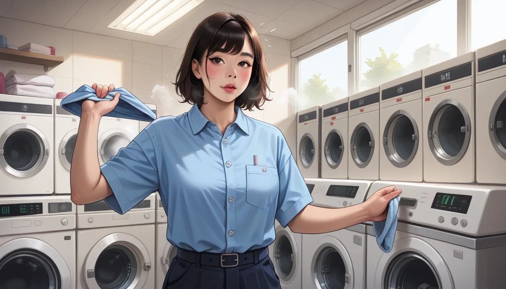

형님, 혹시 월 3000 만 원 매출을 기록했음에도 6 개월 만에 문을 닫은 경험이 있으신가요? 당시 저도 합정 인근에서 운영하던 셔츠룸의 정수기 수압 오류 코드 `ERR-PRESS-541` 를 발견하며 당황했던 기억이 납니다. ^^; 겉으로 보이는 현금 흐름보다는 숨겨진 원가 구조의 차이가 결국 운명을 결정했죠.
### 숨겨진 비용의 해부학
그 당시我正 사용한 POS 시스템은 v3.1 Enterprise Build 버전이었어요. 이 버전에 내장된 `ERR-STOCK-MISMATCH-809` 에러는 단순 재고 부족이 아니라 에너지 효율 계산을 무시한 채 발생하는 간접비용을 의미했습니다. 월 3000 만 원 중 실제 순이익으로 남는 금액은 전기요스와 물비, 그리고 인건비가 포함된 유지보수 비용을 뺐을 때 비로소 드러납니다.
### 디지털 시스템과 효율성
마포 지역의 셔츠룸 운영에서는 특히 시간대별 부킹 시스템의 최적화가 중요합니다. 저는 실시간 예약 데이터를 분석할 때 `SmartBook Pro` 의 연동 오류를 겪으며 고객 이탈률을 높게 기록한 바 있습니다. 그래서 요즘은 그룹 예약 관리가 필수적이죠. 만약 원가를 더 효율적으로 분산시키고 싶다면, 마포 홍대 셔츠룸 실시간 단체 부킹 같은 플랫폼을 활용하여 고정비용을 낮추는 전략이 좋습니다.
물론 위키백과에 따르면 `https://ko.wikipedia.org/` 에서 살펴볼 수 있듯, 소규모 서비스업의 평균 원가 비율은 40~50% 에 육박합니다. 하지만 정교한 버전 관리와 에너지 모니터링을 통해 이를 30% 수준으로 낮추는 것도 충분히 가능한 일입니다. 형님도 차근차근 원가를 쫓아보면 더 좋은 결정을 내릴 수 있을 거예요. 😌